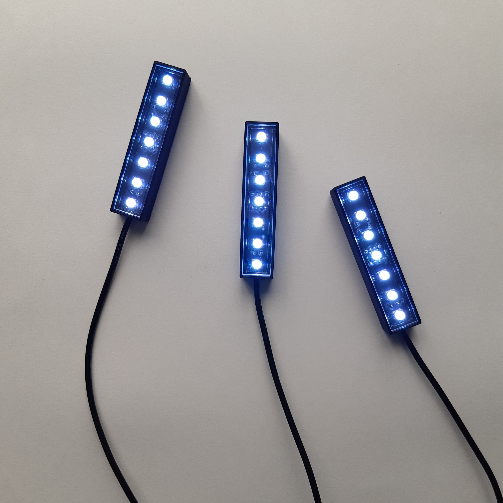
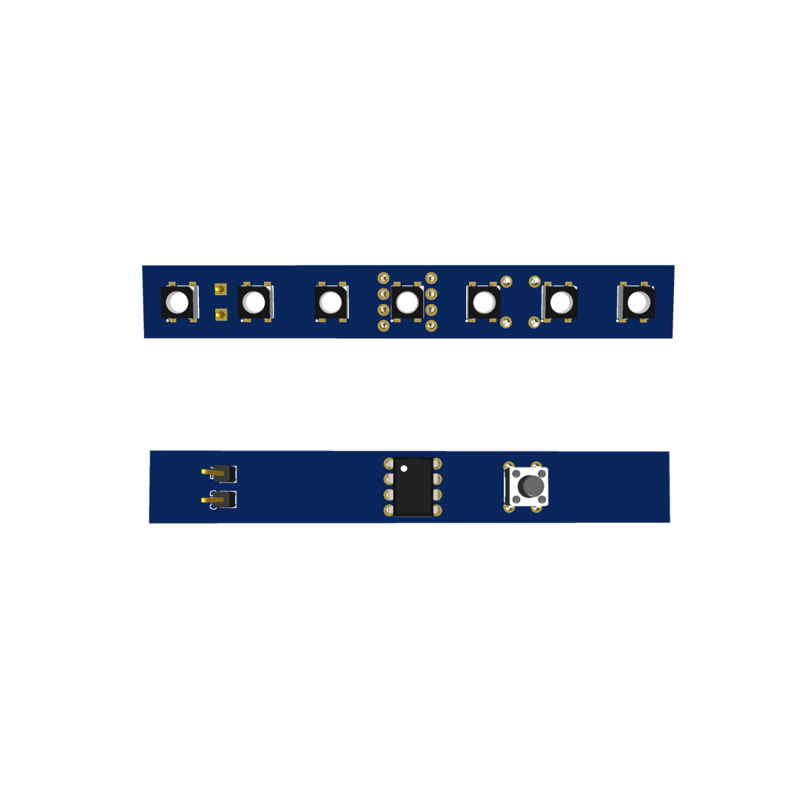

Système d'éclairage d'ambiance
Mise en situation
De 2023 à 2024, j’ai conduit en totale autonomie un projet commercial complet, couvrant toutes les étapes : conception, développement et commercialisation en ligne. Ce travail a abouti à la création d’un éclairage LED d’ambiance innovant, offrant la possibilité de diffuser plusieurs couleurs.
Cahier des charges
Le système a été conçu pour être compact, léger et facilement transportable. Son utilisation intuitive permet de s’adresser à tous types de publics et de s’adapter à de multiples usages. Techniquement, l’ensemble du dispositif repose sur un PCB intégrant 7 LEDs de puissance, un microcontrôleur, un câble d’alimentation ainsi qu’un bouton-poussoir permettant de sélectionner la couleur. Le tout est encapsulé dans un boîtier spécialement conçu et développé pour ce produit.
Partie technique
Pour des raisons de confidentialité toutes les informations techniques (références des composants, schéma électronique etc...) ne seront pas publiques.
Partie électronique
Pour mettre en œuvre ce projet, j’ai intégré 7 LEDs de puissance, reliées à un microcontrôleur qui reçoit les signaux du bouton-poussoir permettant de changer la couleur. L’ensemble du système est alimenté par un câble USB-A. Pour la conception du PCB, j’ai utilisé le logiciel de CAO EasyEDA. J’ai d’abord réalisé le schéma électrique, puis le schéma électronique. Une fois la conception terminée, j’ai envoyé le PCB en production via les services de JLCPCB.
Assemblage électronique des composants électronique
L’assemblage du microcontrôleur, du bouton-poussoir et du câble a été réalisé à l’aide d’un fer à souder classique. Pour les LEDs de puissance, j’ai utilisé une soudure à l’air chaud, plus adaptée à ce type de composants (composants de surface).
Extrait de code de la barre LED
etatBP = digitalRead(BP);
if(etatBP == LOW)
{
etat++;
if(etat > 10)
{
etat = 1;
}
delay(250);
}
Explication du code
Le microcontrôleur lit l’état du bouton-poussoir. À chaque appui, la variable etat est incrémentée pour passer à la couleur suivante. Lorsque la dernière couleur est atteinte, le système recommence le cycle depuis la première couleur. Un court délai est intégré pour éviter que plusieurs changements se produisent à la suite d’un même appui.
Pièces 3D
Le système est composé de 3 pièces 3D. La première est le boîtier principal acceuillant le PCB, le second est le cache arrière aillant pour fonction de fermer le produitet le dernier est le support pour le bouton poussoir. L’ensemble des éléments 3D a été conçu avec le logiciel de CAO FreeCAD. Les pièces ont ensuite été tranchées dans Cura avant d’être imprimées en 3D à l’aide de l’imprimante Créality Ender-3.